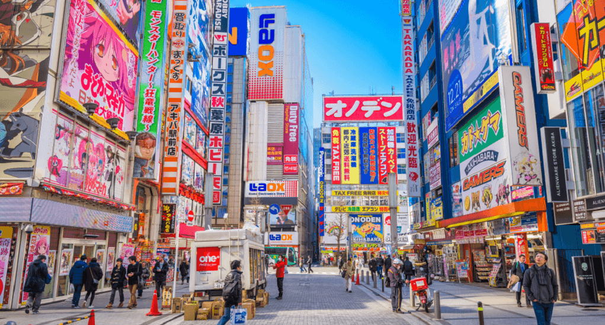
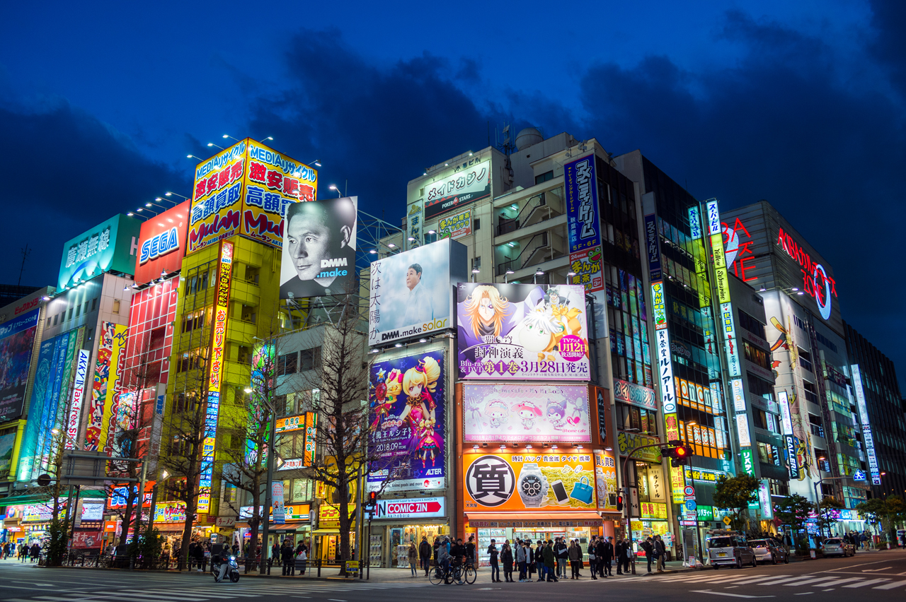

5. Akihabara, Tokyo Prefecture
Akihabara, or 'Electric Town' in Japanese, is one of the most busiest shopping districts in the world. If shopping or just walking around and looking at the scenery is something you enjoy doing, Akihabara is a place that you should visit.
The best time to go to Akiba is at night. The lights from all the shops light up the night making it seem as though it is still daytime. From game shops to restaurants, Akiba has it all. Words cannot even begin to describe the surroundings when taking a stroll through the streets of Akihabara.
4. Kyoto
Anyone who is interested in Japanese Culture or just enjoys looking at historic or religious buildings should definitely visit Kyoto. Kyoto is home to several temples, historic towns and a captivating view of the mountain-side.

Kyoto is home to, in my opinion, one of the most eye-catching temples in the world: Kiyo-Mizu-Dera. Kiyo-Mizu-Dera temple is a very famous temple in Japan. In fact, many schools will take their students on field trips to visit this temple. It is often featured in many animes (Japanese animated shows) as well. Did I mention that this temple is mountain-side? The temple is placed on Kyoto's Higashiyama mountain which overlooks Kyoto; specifically the district of Higashiyama.